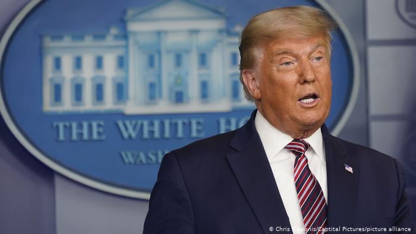

Joe Biden fiton zgjedhjet presidenciale në SHBA
Kandidati i demokratëve, Joe Biden, sipas raportimeve të njëzëshme të disa mediave amerikane ka fituar zgjedhjet presidenciale në SHBA pas fitores në Pensilvani. Trump duket se nuk e njeh rezultatin.

Televizionet CNN, NBC, CBS, ABC, e media të tjera kanë bërë të ditur, se Joe Biden është fitues i zgjedhjeve presidenciale të shtunën në duelin e ashpër me presidentin aktual, Donald Trump. Biden sipas të dhënave të mediave fitoi në shtetin kyç, Pensilvani me 20 delegatët e kolegjit, dhe me këtë ka fituar zgjedhjet. Sipas të dhënave të mediave, Biden fiton kështu 273 delegatë të kolegjit. Për fitoren Bidenit i duhen 270 të tillë. Kështu 77 vjeçari zgjidhet jo vetëm presidenti i 46 i Shteteve të Bashkuara, por edhe presidenti më i moshuar në historinë e vendit.
Joe Biden është shprehur se do të jetë "një president për të gjithë amerikanët. Ai është i „nderuar" të jetë zgjedhur për „të drejtuar vendin tonë të jashtëzakonshëm”, shkroi Biden të shtunën në twitter. "Puna para nesh do të jetë shumë e vështirë, por unë ju premtoj: do të jem president i të gjithë amerikanëve, pavarësisht nëse keni votuar për mua ose jo.”
Reagime gjermane
Presidenti gjerman, Frank-Walter Steinmeier ka uruar Joe Biden për fitoren. „Me presidensën tuaj lidhen shpresat e shumë njerëzve, përtej kufijve të vendit tuaj edhe në Gjermani“, bëri të ditur Steinmeier. „Ju jeni për një Amerikë që e di vlerën e aleancave dhe miqve, të besueshmërisë dhe besimit.“ Edhe kancelarja Merkel e ka uruar po ashtu fitoren e Joe Biden duke theksuar se marrëdhënia transatlantike është e pazëvendësueshme dhe shpreson për bashkëpunim të ardhshëm.
Kurse ministri i Jashtëm gjerman, Heiko Maas shpreson pas fitores së Joe Bidenit për një "fillim të ri" të marrëdhënies transatlantike, ka shkruar Maas në twitter.
Trump nuk dorëzohet kollaj
Donald Trump, sipas njoftimeve në media nuk do të njohë fitoren e kandidatit demokrat, Joe Biden. „Fakti i thjeshtë është që këto zgjedhje nuk kanë marrë fund ende", bëri të ditur Trump të shtunën. Biden „në mënyrë të gabuar" e paraqet veten si fitues dhe mbështetet në këtë pikë nga „aleatët e tij të medias", ka thënë Trump. Trump kishte bërë të ditur që më parë, se do të hedhë në gjyq rezultatin dhe për këtë do të shkojë deri në Gjykatën Supreme. Presidenti ka folur për manipulime masive zgjedhore, por nuk ka sjellë deri më tani prova për atë që "demokratët” duan t'i vjedhin zgjedhjet. Shanset e padive të Donald Trump për zgjedhjet konsiderohen të vogla. Edhe në radhët e republikanëve është shtuar kritika për deklaratat e presidentit amerikan, sepse me sulmin ndaj sistemit zgjedhor, ai sulmon një nga shtyllat qendrore të demokracisë. Trump deri më tani ka lënë të kuptohet, se nuk do ta dorëzojë aq lehtë Shtëpinë e Bardhë. Mandati i presidentit në detyrë merr fund më 20 janar, ditën kur betohet presidenti i ri.